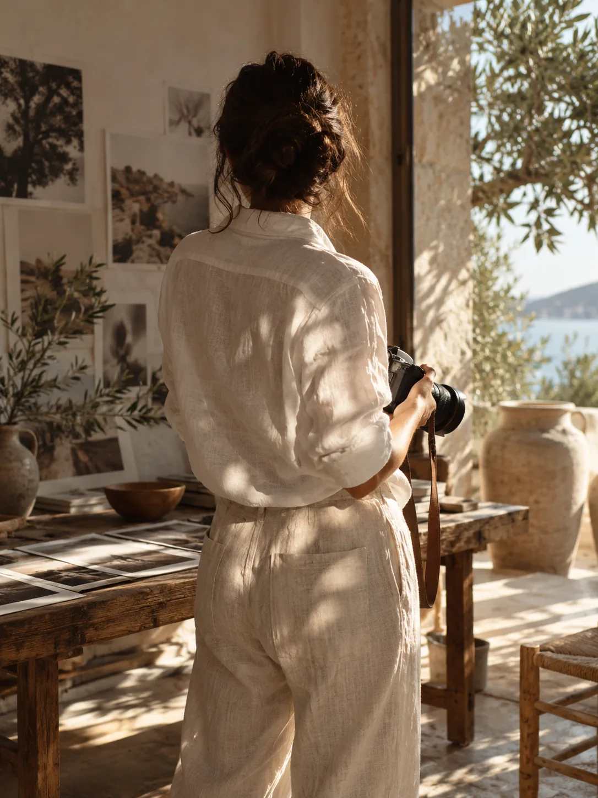
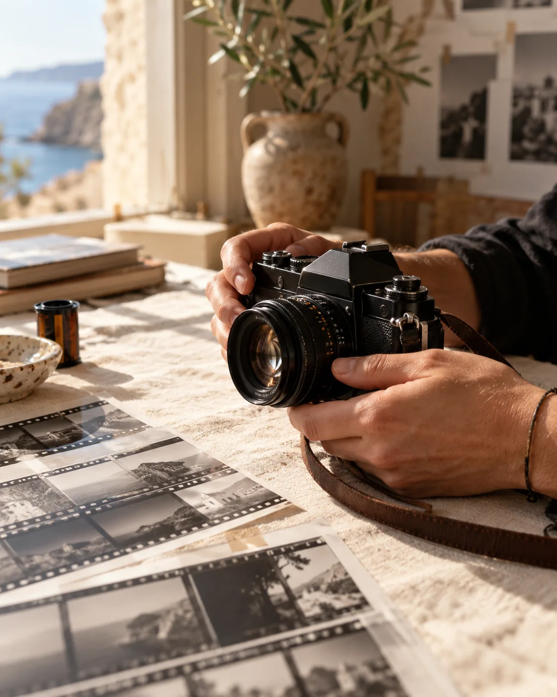

capture create share
Capturer l’instant pour
faire vivre l’authentique.
02 / CONTACT
Et si on
se rencontrait ?
Parlez-moi de votre projet.
VOTRE ÉVÉNEMENT


Une autre façon de regarder.03 / DERRIÈRE L’OBJECTIF
Moi, c’est Lia.
Une personne derrière l’appareil.
Une histoire derrière chaque image.
Des gestes spontanés, une lumière, un lien. Mon regard se pose sur ces petits riens qui racontent beaucoup de vous.
Un mariage, une famille, un visage ou un lieu : l’envie est la même. Faire une place à ce qui vous ressemble.
Lia.Faisons connaissanceImages d’ambiance · portraits de Lia à venir
04 / LE PORTFOLIO
Prenez le temps de regarderDes instants.
Des histoires.
Promenez-vous.
Le reste se passe en images.
Images d’ambiance provisoires · les photographies de Lia prendront place ici
Et votre histoire ?